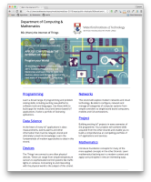

4: Navigation, Semantics & Style Guides
HTML Style Guide

indentation encoding doctype validity semantics entities type attributes quotations
Navigation
nav tab current padding border menu li ul
Semantic HTML
header main nav aside article footer section figure
CSS Style Guide

validity names name style selectors shorthand delimiters order stops quotations
Lab-4a Navigation
nav tab current padding border menu li ul
Lab-4b Case Study

header main nav aside article footer section figure